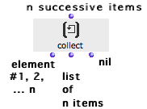

OpenMusic DocumentationHiérarchie de section : OM 6.6 User Manual > Visual Programming II > Iterations: OMLoop > Accumulators > Collect
OpenMusic DocumentationHiérarchie de section : OM 6.6 User Manual > Visual Programming II > Iterations: OMLoop > Accumulators > Collect
Navigation : page précédente | page suivante
Attention, votre navigateur ne supporte pas le javascript ou celui-ci à été désactivé. Certaines fonctionnalités de ce guide sont restreintes.
Collect : Collecting Values
 Collect is the most basic collector of the OMLoop module. It collects the values returned to its input in a list.
Collect is the most basic collector of the OMLoop module. It collects the values returned to its input in a list.
Inputs and Outputs

|
Collect has one default input and three outputs :
|
Example : Building a Random List of Numbers
We want to make a list with seven random numbers between 1 and 100.
|

|
Références :
Plan :
Navigation : page précédente | page suivante
A propos...(c) Ircam - Centre Pompidou